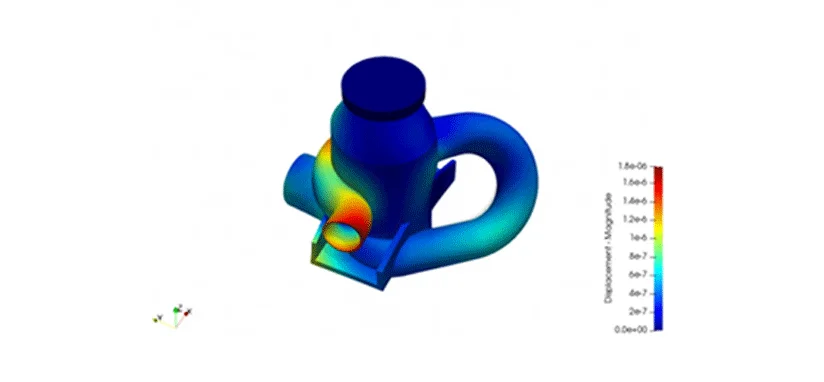

I N F I M E C H
Finite Element Analysis
Finitie Element merupakan bagian dari metode numerik yang memanfaatkan operasi matrix untuk menyelesaikan masalah-masalah fisik. Metode lainnya adalah metode analitik, untuk melakukannya diperlukan suatu persamaan matematika yang merupakan model dari perilaku fisik. Semakin rumit perilaku fisiknya (karena kerumitan bentuk geometri, banyaknya interaksi beban, constrain, sifat material, dan lain-lain) maka semakin sulit atau bahkan mustahil dibangun suatu model matematik yang bisa mewakili permasalahan tersebut. Alternatif metodenya adalah dengan cara membagi kasus tadi menjadi bagian-bagian kecil yang sederhana yang mana pada bagian kecil tersebut kita bisa membangun model matematik dengan lebih sederhana. Kemudian interaksi antar bagian kecil tersebut ditentukan berdasarkan fenomena fisik yang akan diselesaikan. Metode ini dikenal sebagi metode elemen hingga, karena kita membagi permasalahan menjadi sejumlah elemen tertentu (finite) untuk mewakili permasalah yang sebenarnya jumlah elemennya adalah tidak berhingga (kontinum).
Finite element analysis (FEA) adalah suatu cara atau metode numeris untuk mendapatkan penyelesaian dari persamaan diferensial maupun persamaan integral. Penyelesaian persamaan diferensial didasarkan pada penyederhanaan persamaan diferensial yang kompleks dan banyak menjadi persamaan diferensial biasa, kemudian diselesaikan dengan mengintegralkan secara numeris dengan menggunakan metode Euler atau Runge-Kutta. Dalam FEA, obyek baik berupa luasan (2D) maupun volume (3D) dipecah menjadi elemen kecil-kecil kemudian dengan memasukan nilai batasan (biasanya pada permukaan) dan nilai awal (sebagai trial and error) pada rumus-rumus yang ada (misalnya persamaan diferensial). Perhitungan seperti itu dilakukan berulang-ulang (iterasi) sehingga diperoleh hasil yang tepat (masuk toleransi). Perhitungan ini bila dilakukan secara manual akan sulit dan memerlukan waktu yang lama, namun dengan bantuan sebuah computer, perhitungan menjadi mudah dan cepat. Dengan perkembangan computer yang pesat, maka bermunculan banyak software FEA untuk membantu merancang suatu komponen dan system.
Metode ini banyak digunakan pada permasalahan engineering dimana exact solution/analytical solution tidak dapat menyelsaikannya. Inti dari FEM adalah membagi suatu benda yang akan dianalisa, menjadi beberapa bagian dengan jumlah hingga (finite). Bagian-bagian ini disebut elemen yang tiap elemen satu dengan elemen lainnya dihubungkan dengan nodal (node). Kemudian dibangun persamaan matematika yang menjadi reprensentasi benda tersebut. Proses pembagian benda menjadi beberapa bagian disebut meshing.
FEA dapat digunakan untuk menganalisa secara spesific permasalahan di dunia engineering, misalnya kekuatan struktur, korosi, perpindahan panas, maupun gabungan beban yang terjadi, contoh sebuah structure yang terkorosi sebagian, tidak dapat dihitung secara analitis karena ketebalan struktur berbeda di setiap daerah, dengan proses deskritisasi di FEA, dapat diselesaikan dengan mudah.
Dari penjelasan diatas ada perbedaan maksud antara FEM dan FEA. Metode Elemen Hingga (FEM) sebagian besar mengacu pada prosedur matematika yang kompleks penuh dengan rumus rumus hingga perhitungan yang sangat rumit beserta teori-teorinya. Sedangkan Analisis Elemen Hingga (FEA) biasanya digunakan dalam konteks menerapkan FEM untuk memecahkan masalah rekayasa yang ada.
FEM paling baik dipahami dari aplikasi praktisnya, yang dikenal sebagai analisis elemen hingga (FEA) . FEA seperti yang diterapkan di bidang teknik adalah alat komputasi untuk melakukan analisis teknik . Ini mencakup penggunaan teknik pembuatan mesh untuk membagi masalah kompleks menjadi elemen-elemen kecil, serta penggunaan program perangkat lunak yang dikodekan dengan algoritma FEM. Dalam menerapkan FEA, masalah kompleks biasanya berupa sistem fisik dengan fisika yang mendasari seperti persamaan berkas Euler-Bernoulli, persamaan kalor, atau persamaan Navier-Stokes yang dinyatakan dalam persamaan PDE atau integral, sedangkan elemen kecil terbagi masalah kompleks mewakili area yang berbeda dalam sistem fisik.
FEA adalah pilihan yang baik untuk menganalisis masalah pada domain yang rumit (seperti mobil dan jaringan pipa minyak), ketika domain berubah (seperti selama reaksi solid-state dengan batas bergerak), ketika presisi yang diinginkan bervariasi di seluruh domain, atau ketika solusi tidak memiliki kelancaran. Simulasi FEA menyediakan sumber daya yang berharga karena mereka menghapus beberapa contoh pembuatan dan pengujian prototipe keras untuk berbagai situasi dengan ketelitian tinggi. Misalnya, dalam simulasi tabrakan frontal, akurasi prediksi dapat ditingkatkan di area “penting” seperti bagian depan mobil dan menguranginya di bagian belakang (sehingga mengurangi biaya simulasi). Contoh lain adalah dalam prediksi cuaca numerik , di mana lebih penting untuk memiliki prediksi yang akurat untuk mengembangkan fenomena yang sangat nonlinear (seperti siklon tropis di atmosfer, atau pusaran di lautan) daripada di daerah yang relatif tenang.
setelah semua penjelasan di atas mengenai pengertian Finite Element Analysis hal-hal yang terkait sebagai berikut:
1. Persamaan Matematika mengenai FEA
2. Metode / skema pelaksanaan simulasi
3. Hasil output dari FEA